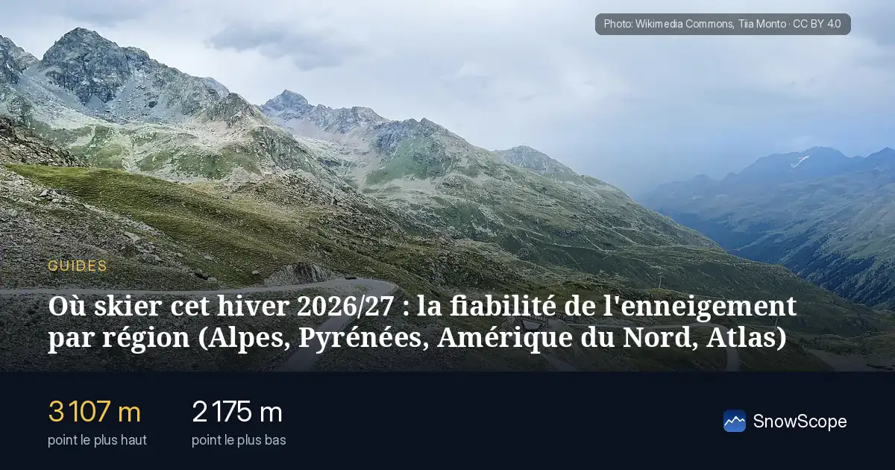

Où skier cet hiver 2026/27 : la fiabilité de l'enneigement par région (Alpes, Pyrénées, Amérique du Nord, Atlas)
Certaines stations conservent la neige presque chaque hiver ; d'autres comptent sur la chance. Nous avons étudié l'épaisseur de neige à mi-montagne sur 46 hivers passés (1980-81 à 2025-26) et compté combien de jours entre le 15 décembre et le 31 mars avaient au moins 30 cm dans 9 hivers sur 10. Cela vous dit où réserver pour la certitude.
Consultez les prévisions neige en temps réel pour Kaunertaler Gletscher sur l'application SnowScopeHauteurs de neige, alertes poudreuse et carte 3D, gratuitement.
Qu'est-ce qu'une station fiable
La saison de ski principal dure 108 jours. Une station gagne le statut « fiable » si elle a au moins 30 cm à mi-montagne pendant ce nombre de jours dans 9 des 10 hivers passés. Nous suivons aussi les « jours typiques » : au moins 30 cm dans la moitié des hivers. Ces chiffres proviennent de notre historique de neige—un enregistrement de l'épaisseur de neige passée corrigée selon l'altitude—non de rapports de stations ou de suppositions.
L'altitude compte. Les stations plus hautes ont tendance à avoir plus de jours fiables. C'est aussi le cas des glaciers et des pentes exposées au nord, qui retiennent mieux la neige à l'arrivée du printemps.

Alpes : la région la plus fiable
Sur 1 178 stations alpines étudiées, 211 ont au moins 90 jours fiables. C'est l'histoire la plus positive en Europe. Les plus hautes stations fiables—Kaunertaler Gletscher et Jungfraujoch Snow Fun Park—atteignent toutes deux 108 jours, ce qui signifie au moins 30 cm à mi-montagne presque chaque hiver.
Février est le mois de pointe pour la neige dans les Alpes, avec une épaisseur typique à mi-montagne de 48 cm. La station alpine médiane a 92 jours typiques (ce qui signifie que la moitié des hivers passés avaient 30 cm ou plus pendant ce nombre de jours). La Grave et Mölltaler Gletscher remplissent aussi ces deux conditions : 108 jours fiables et 108 jours typiques.

Pyrénées : neige plus fine, moins de garanties
Aucune des 53 stations pyrénéennes que nous avons examinées n'atteint 90 jours fiables. La plus fiable, Ordino-Arcalis, a 64 jours fiables—bien, mais pas garanti. Cauterets Cirque du Lys atteint 39 jours fiables ; Formigal et Gourette sont en dessous de 30.
Février reste le mois le plus fort (49 cm typiques à mi-montagne), mais la station médiane n'a que 67 jours typiques. Si vous choisissez une station pyrénéenne, optez pour une qui est haute, exposée au nord, ou qui a un glacier. Réservez tard dans la saison et consultez la carte de neige en direct près de votre voyage.

Ouest américain : fiabilité élevée, pic en mars
Sur 195 stations de l'Ouest américain, 77 ont 90 jours fiables ou plus. La station médiane a 72 jours fiables, ce qui est solide. Les quatre premières—Mt. Bachelor, Crystal Mountain, Stevens Pass, et Mt Baker—atteignent toutes 108, plus 108 jours typiques chacune.
Mars est le mois le plus enneigé dans l'Ouest américain, avec 124 cm typiques à mi-montagne. La station médiane a 108 jours typiques, ce qui signifie que vous pouvez compter sur de la bonne neige dans la moitié de tous les hivers. L'Ouest américain est en tête du monde pour la fiabilité de la neige.
Ouest canadien : saison courte, totaux élevés
Sur 57 stations canadiennes, 38 ont 90 jours fiables ou plus. La médiane ici est exceptionnellement élevée : 108 jours fiables et 108 jours typiques. Sasquatch, Whistler Blackcomb, Mount Cain Alpine Park, et Ski Callaghan offrent tous les 108 jours complets de certitude de neige.
Mars est le mois de pointe avec 92 cm typiques à mi-montagne. Ces stations ferment souvent début avril, donc la saison est plus courte que dans les Alpes, mais la neige est fiablement épaisse tant qu'elle dure.
Nord-est américain et Maroc : la neige est rare
Aucune des 111 stations du Nord-est américain n'atteint 90 jours fiables. La meilleure—Saddleback Mountain—a 79 jours fiables. La médiane est 0, et les jours typiques médians ne sont que 63. Février culmine à 41 cm. Les séjours en début de saison (avant Noël) sont risqués ; les vacances de fin février offrent les meilleures chances.
Dans les montagnes de l'Atlas au Maroc, nous avons examiné 3 stations. Oukaimden, la plus haute à 3 204 m, a 81 jours typiques mais 0 jour fiable. La neige là-bas est fine et peu fiable. Si vous prévoyez un séjour de ski au Maroc, allez en janvier ou février et consultez la carte attentivement.
Conseils aux skieurs
- Réservez les séjours en début de saison (avant Noël) uniquement dans les stations hautes, glaciaires, exposées au nord avec 90+ jours fiables. Les stations basses ont besoin que la neige d'hiver arrive d'abord.
- Février est le mois le plus sûr pour la plupart des régions ; mars retient la neige la plus épaisse à haute altitude en Amérique du Nord.
- Dans les Pyrénées, le Nord-est américain, et l'Atlas, consultez la carte de neige en direct et réservez tard—la neige peut arriver tard ou fondre vite, donc les décisions près du départ fonctionnent mieux que les réservations anticipées.
- Les stations basses et moins chères offrent une excellente valeur dans les hivers généreux : utilisez la carte pour les repérer quand la neige tombe.
- Avant toute journée hors-piste, consultez le bulletin officiel d'avalanche de votre région, même dans les stations avec un long historique de neige.
À propos de ces chiffres
Les hauteurs de neige des stations sont la neige la plus épaisse sur le haut du domaine à la date indiquée ; ce sont des estimations pour une zone, pas une mesure en un point. Les prévisions peuvent changer. Consultez toujours le bulletin d'avalanche officiel avant le hors-piste.
Bulletins d'avalanche officiels: EAWS (Europe) · avalanche.org (US) · Avalanche Canada
Citer ce bulletin
Pour la recherche, l'enseignement ou la presse : chiffres et graphiques réutilisables librement sous CC BY 4.0 avec cette citation.
SnowScope (2026), Où skier cet hiver 2026/27 : la fiabilité de l'enneigement par région (Alpes, Pyrénées, Amérique du Nord, Atlas), https://snowscope.app/blog/fr/2026/11/where-to-ski-winter-2026-27-snow-reliability-by-region.html, consulté le 2026-11-03
SnowScope (Atlas Labs). (2026, November 3). Où skier cet hiver 2026/27 : la fiabilité de l'enneigement par région (Alpes, Pyrénées, Amérique du Nord, Atlas). SnowScope snow reports. https://snowscope.app/blog/fr/2026/11/where-to-ski-winter-2026-27-snow-reliability-by-region.html
BibTeX
@misc{snowscope2026wheretoskiwinter202627sn,
author = {{SnowScope (Atlas Labs)}},
title = {Où skier cet hiver 2026/27 : la fiabilité de l'enneigement par région (Alpes, Pyrénées, Amérique du Nord, Atlas)},
year = {2026},
month = nov,
howpublished = {\url{https://snowscope.app/blog/fr/2026/11/where-to-ski-winter-2026-27-snow-reliability-by-region.html}},
note = {Published 2026-11-03 16:34 UTC; accessed 2026-11-03}
}· CC BY 4.0 · Méthodes, données et outils →
Suivre Kaunertaler Gletscher
Gratuit : un message quand la neige arrive, et la météo chaque matin.